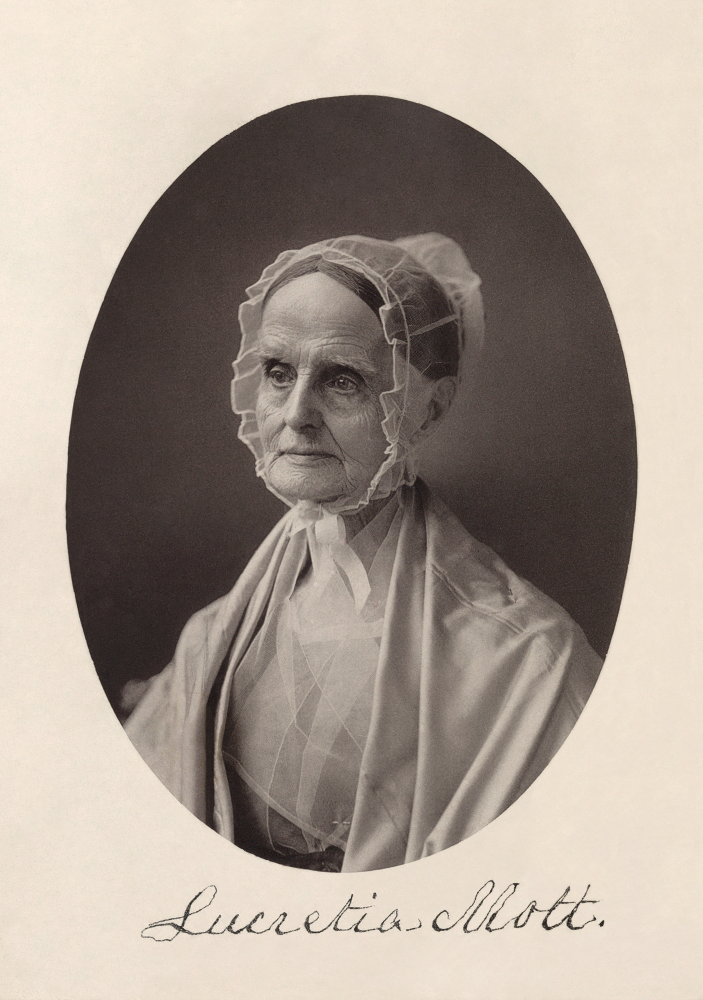

Directions: Work through the five stations in order. Each station holds one record in the making of the women's argument: a declaration copied from 1776, the printed report that carried the convention to the country, an argument from scripture printed eleven years earlier, a statute that moved three months before the convention, and a summary of the London meeting where the organizers met. At each station, state what the record supplied to the women of 1848. At the end, answer the lesson question from the file.
Source: Elizabeth Cady Stanton and the Seneca Falls Convention, Declaration of Sentiments, July 19, 1848, as carried in the audited TPSP record (National Park Service; punctuation normalized, as the record states). Cuts are marked with ellipses, as the record carries them.
"We hold these truths to be self-evident; that all men and women are created equal; that they are endowed by their Creator with certain inalienable rights; that among these are life, liberty, and the pursuit of happiness; that to secure these rights governments are instituted, deriving their just powers from the consent of the governed. [...] The history of mankind is a history of repeated injuries and usurpations on the part of man toward woman, having in direct object the establishment of an absolute tyranny over her. To prove this, let facts be submitted to a candid world."
"He has never permitted her to exercise her inalienable right to the elective franchise. He has compelled her to submit to laws, in the formation of which she had no voice. [...] He has made her, if married, in the eye of the law, civilly dead. He has taken from her all right in property, even to the wages she earns. [...] He has monopolized nearly all the profitable employments, and from those she is permitted to follow, she receives but a scanty remuneration."
State the claim the opening passage copies from 1776, naming the two words Stanton added to its most famous sentence, and state the standard it sets for when a government holds just powers.
From the grievances, state the legal condition of a married woman in the Declaration's own terms, naming what she has lost in standing, in property, and in wages.
Source: Elizabeth Cady Stanton, Report of the Woman's Rights Convention, Seneca Falls, July 19 and 20, 1848, as carried in the audited TPSP record (National Park Service; the 1848 pamphlet held by the Library of Congress). Cuts are marked with ellipses, as the record carries them. Hyphens are as the record carries them.
"When, in the course of human events, it becomes necessary for one portion of the family of man to assume among the people of the earth a position different from that which they have hitherto occupied, but one to which the laws of nature and of nature's God entitle them, a decent respect to the opinions of mankind requires that they should declare the causes that impel them to such a course."
"Such has been the patient sufferance of the women under this government, and such is now the necessity which constrains them to demand the equal station to which they are entitled."
"Now, in view of this entire disfranchisement of one-half the people of this country, their social and religious degradation, - in view of the unjust laws above mentioned, and because women do feel themselves aggrieved, oppressed, and fraudulently deprived of their most sacred rights, we insist that they have immediate admission to all the rights and privileges which belong to them as citizens of these United States. [...]"
The report is the printed pamphlet of the convention's proceedings. State what that format supplied that the meeting in the chapel could not, naming the audience a pamphlet reaches that a hall holds for two days cannot.
State the demand of the closing passage in its own terms, naming the fraction of the people it says are disfranchised, the admission it insists on, and the word that sets its timing.
Source: Sarah Grimké, Letters on the Equality of the Sexes and the Condition of Woman, Letter I, dated July 11, 1837 (Boston: Isaac Knapp, 1838). The passage is quoted from that edition's text of Letter I. The summary that follows it is a teaching summary of the letter's argument, written for this lesson, and is labeled as one.
"Had Adam tenderly reproved his wife, and endeavored to lead her to repentance instead of sharing in her guilt, I should be much more ready to accord to man that superiority which he claims; but as the facts stand disclosed by the sacred historian, it appears to me that to say the least, there was as much weakness exhibited by Adam as by Eve. They both fell from innocence, and consequently from happiness, but not from equality."
Teaching summary of Letter I. Letter I, titled "The Original Equality of Woman," reads the creation account in Genesis and argues that woman was created man's equal, that dominion in the account was given over the animals and not of man over woman, and that the subjection women live under came after the Fall as a consequence men have enlarged into a system. Grimké wrote the Letters to answer clergy who had ordered women to keep silence and stay in their appointed sphere.
State Grimké's verdict on the Fall in the quoted passage, naming what Adam and Eve each fell from and the one thing the passage says they did not fall from.
Set this station beside Station 1. Grimké argued in 1837 from scripture. State the foundation Stanton argued from in 1848, and state what the two foundations share, in one sentence each.
Source: Laws of the State of New York, chapter 200, passed April 7, 1848, sections 1 and 3, in the transcription of the session laws consulted for this lesson. The act is titled "An Act for the more effectual protection of the property of married women." Section 2, which applies the same rule to women already married, is not printed here.
"Section 1. The real and personal property of any female who may hereafter marry, and which she shall own at the time of marriage, and the rents issues and profits thereof shall not be subject to the disposal of her husband, nor be liable for his debts, and shall continue her sole and separate property, as if she were a single female."
"Section 3. It shall be lawful for any married female to receive, by gift, grant devise or bequest, from any person other than her husband and hold to her sole and separate property, and the rents, issues and profits, thereof, and the same shall not be subject to the disposal of her husband, nor be liable to his debts."
State what section 1 secures to a woman who marries after the act, naming the property covered, the two dangers it is protected from, and the comparison the section uses to define her standing.
Set this statute beside Station 1's grievance that man "has taken from her all right in property." State what the act had already answered three months before Seneca Falls met, and state two things it did not give, from the lesson reading.
Source: Teaching summary, written for this lesson from the public record of the World's Anti-Slavery Convention, London, June 1840. This station is a summary, not a quotation, and is labeled as one. The facts summarized are the convention's vote on its women delegates, the seating that followed, and the meeting of Mott and Stanton in the gallery.

Teaching summary. In June 1840 the World's Anti-Slavery Convention met in London, with delegates sent by antislavery societies in Britain, France, and the United States. Several American societies had named women among their delegates, Lucretia Mott among them. On the first day the convention debated whether the women would be admitted and voted to refuse them their seats. The women were seated in a gallery section set apart and curtained from the floor, where they could watch the proceedings and take no part in them. William Lloyd Garrison, arriving after the vote, refused his place on the floor and sat with the women. Elizabeth Cady Stanton, in London on her honeymoon as the wife of a delegate, spent the convention in that gallery beside Mott. The two women discussed the condition of women through the days of the meeting and agreed that the remedy was a convention of their own, called to discuss the rights of woman.
State the sequence of the exclusion in order, naming the vote, the seating, and the one man in the record who gave up his floor seat, and state his reason as the summary gives it.
State what this station supplied to Seneca Falls eight years later, naming the two women, the agreement they reached in the gallery, and the office Mott's experience fitted her to fill in the movement that followed.
For each record, state what it supplied to the women of 1848, in one sentence grounded in the station.
| Station | What it supplied | What it did not supply |
|---|---|---|
| Station 1: Declaration of Sentiments | ||
| Station 2: Report of the convention | ||
| Station 3: Grimké, Letter I | ||
| Station 4: The property act of 1848 | ||
| Station 5: The London exclusion, 1840 |
Close the file with a verdict. The lesson question asks where the women of 1848 got their argument, and what they asked for first. Answer both halves from the records in this file, using at least two stations, and answer the strongest claim against your answer that this file supports.
State the copied claim, the added words, and the standard of just powers. The opening copies the Declaration of Independence and adds the words men and women, so its truths read that all men and women are created equal. Governments, it holds, are instituted to secure inalienable rights and derive their just powers from the consent of the governed, the standard by which a government ruling women who cannot consent, vote, or hold office stands condemned in its own terms.
State the married woman's condition in the Declaration's terms. If married, she is made, in the eye of the law, civilly dead. He has taken from her all right in property, even to the wages she earns, and monopolized nearly all the profitable employments, paying a scanty remuneration in the few employments left open to her.
State what the pamphlet supplied. The pamphlet carried the proceedings past the chapel walls to readers across the country, the wider public the organizers addressed in print. A meeting holds its audience for two days in one room. A printed report argues the case in every town it reaches, in the convention's own words, for as long as copies circulate.
State the closing demand. In view of the entire disfranchisement of one-half the people of this country, the report insists that women have immediate admission to all the rights and privileges which belong to them as citizens of these United States. The fraction is one-half the people, the admission is to all rights and privileges of citizens, and the timing word is immediate.
State the verdict on the Fall. Adam and Eve both fell from innocence, and consequently from happiness. The one thing the passage says they did not fall from is equality. Adam, who shared the guilt instead of reproving it, showed as much weakness as Eve, so the Fall supplies no ground for man's claimed superiority.
Set the two foundations side by side. Grimké argued from scripture, reading the creation account in Genesis to show the sexes created equal. Stanton argued from the Declaration of Independence of 1776, copying its sentences and adding women to its truths. The two foundations share a claim about origins: each grounds equality in how human beings were made, one in creation as scripture records it and one in the self-evident truths the republic was founded on, so each answers the charge that equality was a new invention of 1848.
State what section 1 secures. The real and personal property a woman owns at marriage, and its rents, issues, and profits, shall not be subject to the disposal of her husband and shall not be liable for his debts. It continues her sole and separate property, as if she were a single female, the comparison that defines her standing under the act.
State what the act had answered, and two things it did not give. Three months before Seneca Falls met in the same state, the act had answered the property grievance in part: a married woman's own property was hers again in law, apart from her husband. It did not give a wife her wages, which the amendment of 1860 would later address, and it gave no woman the elective franchise, or a general power to contract in her own name. Credit any two limits stated from the reading.
State the sequence. The convention debated the women's credentials and voted to refuse the women delegates their seats. The women were placed in a curtained gallery section, to watch and take no part. William Lloyd Garrison, arriving after the vote, refused his seat on the floor and sat with the women, in protest at the exclusion as the record of the meeting gives it.
State what London supplied. It supplied the organizers and the resolve. Lucretia Mott, the experienced Quaker minister and abolitionist, and Elizabeth Cady Stanton, twenty four and in London on her honeymoon, met across the gallery and agreed to call a convention to discuss the rights of woman when they returned home. Mott's standing as a minister and a movement leader fitted her to preside over the generation that built the women's rights movement, and to open the Seneca Falls meeting as its senior figure.
Station 1 supplied the founding text rewritten, a bill of grievances against man in the form of 1776, and did not supply an organization or a vote. Station 2 supplied the printed record that carried the convention to the country, and did not supply the argument itself, which the declaration carries. Station 3 supplied the scriptural argument a decade early, equality from creation, and did not supply a political program, a convention, or a demand on any legislature. Station 4 supplied proof that coverture could be changed by statute, and a property foothold in the convention's own state, and did not supply wages, contracts, or the franchise. Station 5 supplied the two organizers, the grievance of the gallery, and the agreement to meet, and did not supply the occasion, which waited eight years for Stanton's removal to Seneca Falls and Mott's visit in July 1848. Closing verdicts earn full credit when both halves of the lesson question are answered from at least two stations. The argument came from scripture as Grimké read it, from the Declaration of 1776 as Stanton rewrote it, and from a decade of antislavery work that taught the method. What they asked for first was immediate admission to all the rights and privileges of citizens, property already partly won in April 1848, with the elective franchise demanded in the same resolutions and carried by the narrowest margin in the hall. A verdict using one station only earns partial credit.